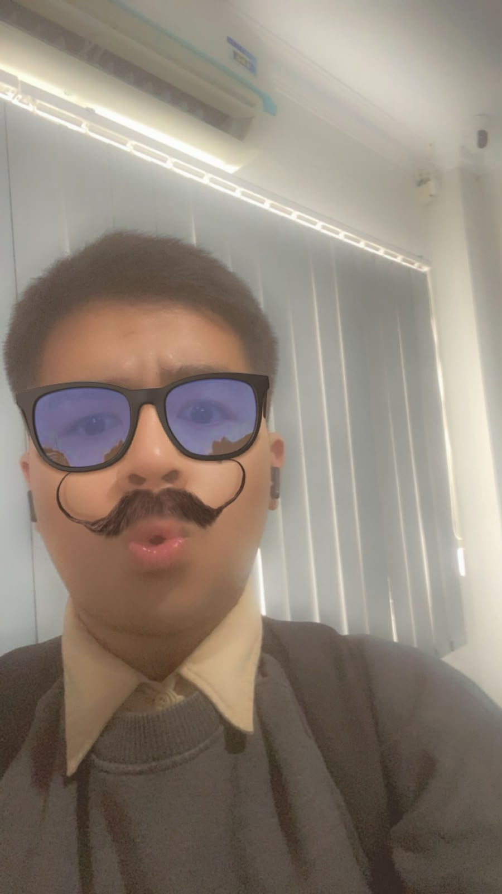

Struktur Folder & Aset
Mengorganisir file CSS dan gambar ke dalam folder aset secara modular dan teratur.
Website resmi profil dan portofolio pembelajaran Web Design kelas 10 SMA.
Kenali Saya
Calon Junior Web Designer & Programmer
Saat ini saya sedang menempuh pembelajaran web development di sekolah. Saya mempelajari cara membangun website semantik, pengelolaan versi dengan Git & GitHub, serta tata kelola aset proyek secara profesional.
Mengorganisir file CSS dan gambar ke dalam folder aset secara modular dan teratur.
Menerapkan navigasi halaman modern yang tetap menempel di layar saat digulir.
Mempublikasikan perubahan halaman langsung secara online ke GitHub Pages.